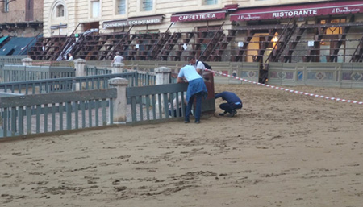

|
- IL PALIO RIMANDATO -
|
|
 Diciamocela tutta, questo 2022, non è proprio un anno paliescamente fortunato. Dopo tutti i problemi di luglio, ci mancava solo la pioggia a mettere i bastoni tra le ruote alla festa senese. Tutto era pronto, il drappello dei carabinieri a cavallo era già sfilato regalando la solita botta di adrenalina con l’emozionante carica a sciabole sguainate, i Mazzieri si stavano già affacciando alla Bocca del Casato ed attendevano solo lo scoppio del mortaretto per accedere in Piazza, quando Giove Pluvio, beffardo e dispettoso, ha deciso di scaricare su Siena un acquazzone di circa dieci minuti, tempo breve ma sufficiente per rendere la pista di tufo impraticabile. Il fuggi fuggi generale dalla Conchiglia ha preceduto di pochi minuti l’inevitabile esposizione, per la seconda volta in giornata, e per la terza nei quattro giorni, alla trifora centrale di Palazzo Pubblico, della bandiera verde, segnale inequivocabile del rinvio del Palio a domani. Dal dopoguerra ad oggi, sono diverse le occasioni in cui la carriera è stata posticipata per maltempo, la prima delle quali nel Palio della Pace: il 19 agosto, data scelta per la corsa si scatenò un diluvio che costrinse a rinviare il tutto al 20. E l’acqua fu il male minore di quel Palio…. Altro straordinario ed altro rinvio per pioggia nel 1961, quando il Palio del 4 giugno, corso in occasione del centenario dell’unità d’Italia, ultima carriera non ordinaria disputata in primavera, fu corso il 5. Il secondo lustro degli anni '70 fu tremendo: nell’agosto 1975 e nel luglio 1978 il Palio fu rinviato di 24 ore, nell’agosto '76 e nel luglio '79 addirittura si corse due giorni dopo. E pure gli anni '80 non iniziarono proprio alla grande: la prima carriera dell’Assunta del decennio fu rinviata al 17 per pioggia. Solo due rinvii per maltempo negli anni 90, il 3 luglio 1992 a causa di un nubifragio nel primo pomeriggio, ed il 3 luglio 1997, quando il temporale, così come accaduto oggi, sorprese le comparse che si stavano avvicinando a Piazza percorrendo via del Casato. Ultimo spostamento di data, almeno fino ad oggi, i 17 agosto 2015. Per gli amanti delle statistiche, tra le contrade domani al canape, sono Selva e Civetta le contrade che ha vinto di più nei Palii sopra elencati, con due successi, la contrada di Vallepiatta nel 1978 e nel 2015, quella del Castellare nel 1976 e nel '79. Una vittoria a testa per Nicchio (1961), Chiocciola (1975), Leocorno (1980), e Giraffa (1997, l’anno del cappotto). Le altre carriere, quella della Pace del '45, e quella del '92 furono conquistate da due contrade in questa occasione non partecipanti, Drago ed Aquila. Davide Donnini |